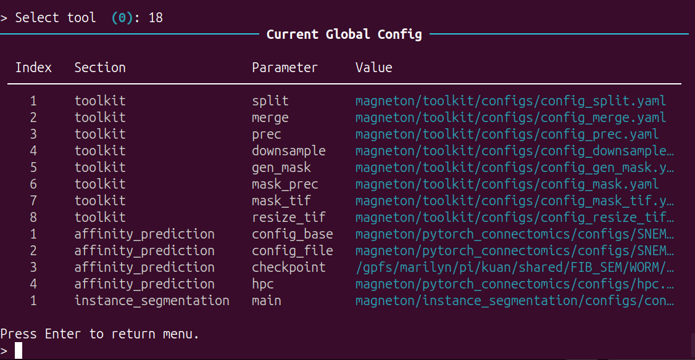
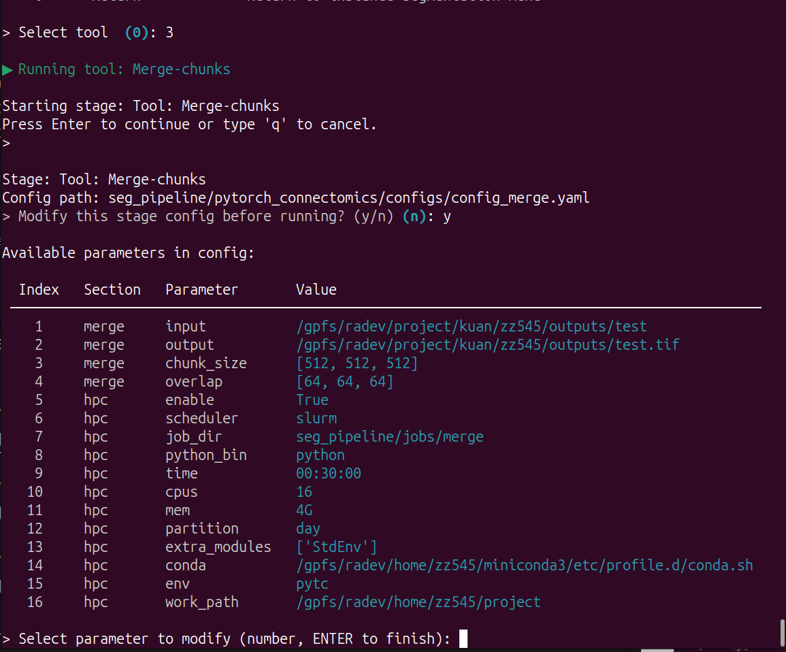

Processing Toolkit
This tutorial provides step-by-step guidance for pre- and post- processing toolkit.
Please use it as needed. If you have any new requirements, please let me know.
Main Menu
Run python -m magneton to start the CLI.
This interface displays the basic information of the current system. The main interface consists of 3 functional modules: processing toolkit, affinity map inference module and instance segmentation module.

Input 1 and Enter, enter the processing toolkit menu:

Options
This module can be used for configuration, data preprocessing and postprocessing.
Global Configuration
Input 18 and Enter, view current global configuration:

For the title:
Section: the configuration file for which module.Parameter: the key in configuration file.Value: the value of key
For the keys in toolkit module:
The details of the keys are specified in the YAML files.
split: the config file path for split tool.merge: the config file path for merge tool.prec: the config file path for the precomputed format converter.downsample: the config file path for the precomputed data downsampling.gen_mask: the config file path for mask generator of precomputed data.mask_prec: the config file path for masking of precomputed data.mask_tif: the config file path for masking of tif data.resize_tif: the config file path for resizing of tif data.
Input 17 and Enter, edit current global configuration:
Currently, only modifications are permitted; additions are not allowed.
You can select a value to change:

Data preprocessing and postprocessing
The tool menu:
Split tool
Input 1 and Enter, using local resources to split tif volume to tif blocks with overlap.
Input 2 and Enter, using HPC resources to split tif volume to tif blocks with overlap.
The tool is based on the configuration files (split in global configuration file).Before start the training, you can modify the configuration by CLI or any tools:

Merge tool
Input 3 and Enter, using local resources to merge h5 blocks (inference) to tif volume with overlap.
Input 4 and Enter, using HPC resources to merge h5 blocks (inference) to tif volume with overlap.
The tool is based on the configuration files (merge in global configuration file).Before start the training, you can modify the configuration by CLI or any tools:

Convert tool
Input 5 and Enter, using local resources to convert tif/h5 data to precomputed format.
Input 6 and Enter, using HPC resources to convert tif/h5 data to precomputed format.
These tools are based on the configuration files (prec in global configuration file).Before start the converting, you can modify the configuration by CLI or any tools.
Downsample tool
Input 7 and Enter, using local resources to create lower-resolution mipmap levels using voxel downsampling for precomputed data.
Input 8 and Enter, using HPC resources to create lower-resolution mipmap levels using voxel downsampling for precomputed data.
These tools are based on the configuration files (downsample in global configuration file).Before start the converting, you can modify the configuration by CLI or any tools.
Mask tool
Input 9 and Enter, using local resources to generate binary masks from affinity maps.
Input 10 and Enter, using HPC resources to generate binary masks from affinity maps.
These tools are based on the configuration files (gen_mask in global configuration file).Before start the converting, you can modify the configuration by CLI or any tools.
Mask Prec tool
Input 11 and Enter, using local resources to apply a mask to prec images, preserving structure.
Input 12 and Enter, using HPC resources to apply a mask to prec images, preserving structure.
These tools are based on the configuration files (mask_prec in global configuration file).Before start the converting, you can modify the configuration by CLI or any tools.
Mask Tif tool
Input 13 and Enter, using local resources to apply a mask to tif images, preserving structure.
Input 14 and Enter, using HPC resources to apply a mask to tif images, preserving structure.
These tools are based on the configuration files (mask_tif in global configuration file).Before start the converting, you can modify the configuration by CLI or any tools.
Resize TIf tool
Input 15 and Enter, using local resources to resize tif volumes to new voxel size or dimension.
Input 16 and Enter, using HPC resources to resize tif volumes to new voxel size or dimension.
These tools are based on the configuration files (resize_tif in global configuration file).Before start the converting, you can modify the configuration by CLI or any tools.